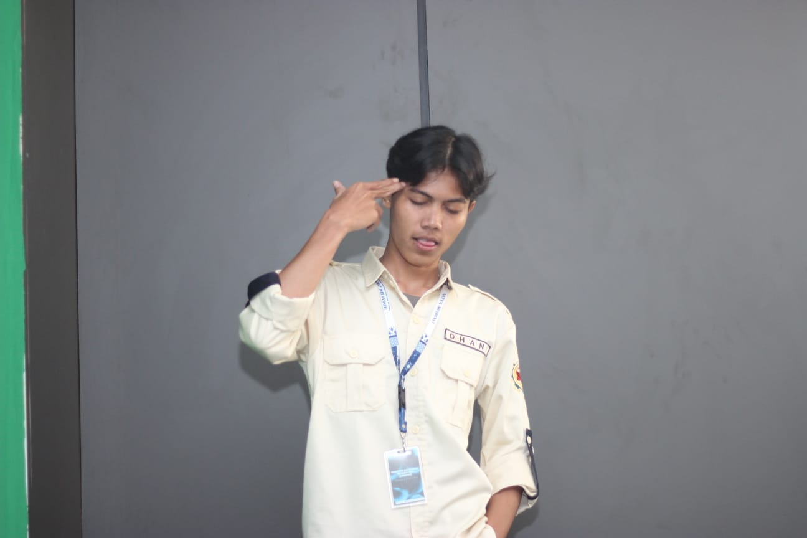

MY PORTFOLIO

Tifo Project 1

Billiard Activity

Tifo Project 2
Halo! Saya Moch Subchi Ramadhani (NIM: 2388010043). Saya adalah seorang mahasiswa yang berfokus pada pengembangan teknologi dan desain kreatif. Mari bekerja sama dalam proyek luar biasa Anda.
About Me
Tifo Project 1
Billiard Activity
Tifo Project 2